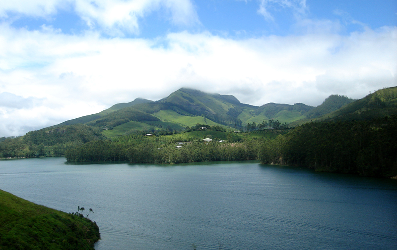
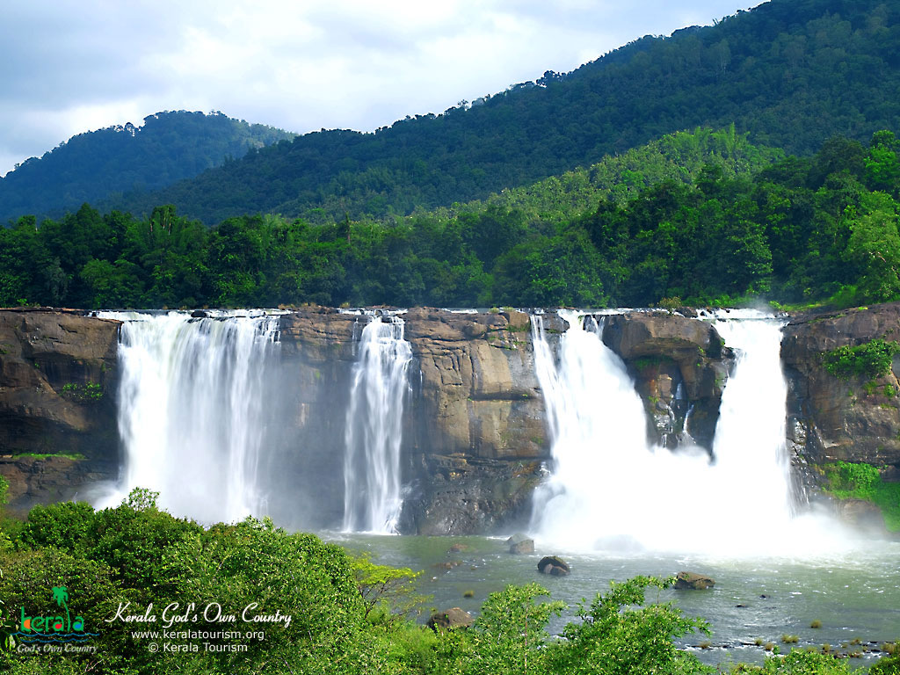

IDUKKI :
This beautiful High range district of Kerala is geographically known for its Mountainous Hills and Dense Forests.
For the people of Kerala, Idukki is always associated with Power Generation.
About 66% of the State's Power needs come from the Hydroelectric Power Projects in Idukki.
Idukki accounts for 12.9 percent of the area of Kerala and only 3.7 percent of the population of Kerala.
About 50% of its area is Reserved Forests.
 
HOME
NEXT